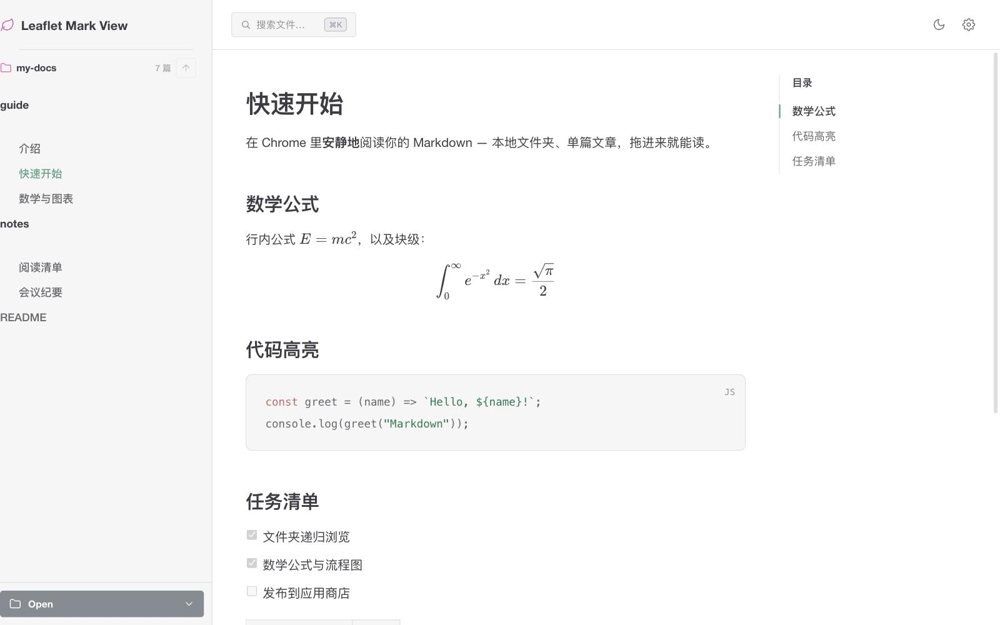
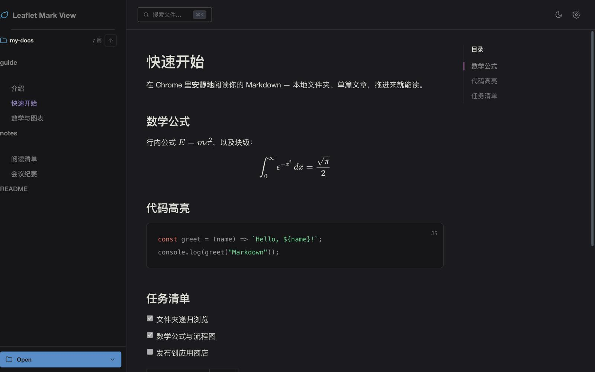
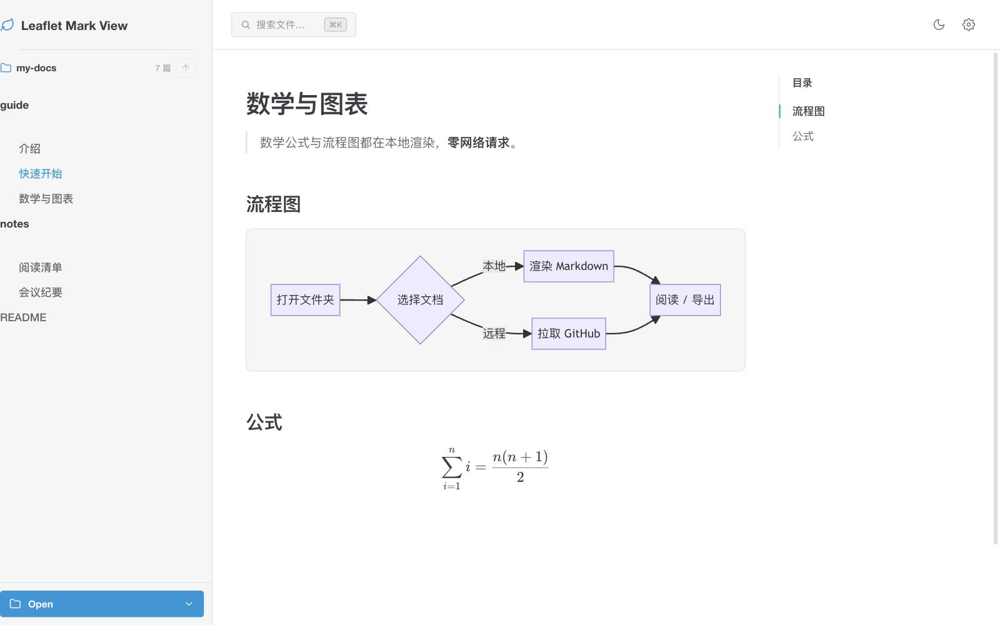
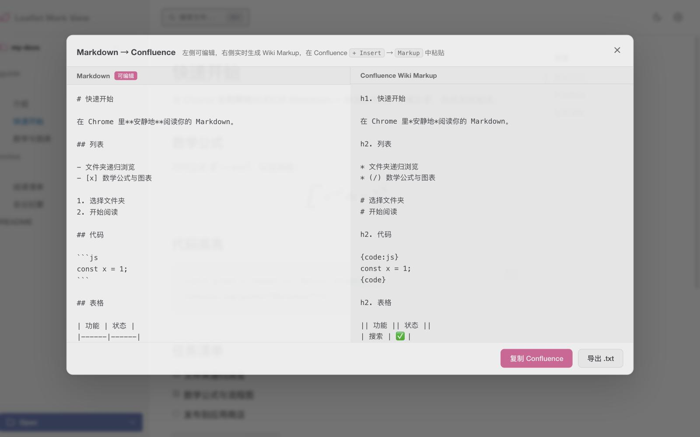

01 / FOLDER
Folders, GitHub, drag and drop
File tree, search, outline, and remembered scroll. Light, parchment, sage, dark, and ink themes.
Open a local folder, a file, or a GitHub repo. Parsing stays in the browser.


Reading
File tree, search, outline, and remembered scroll. Light, parchment, sage, dark, and ink themes.
KaTeX, Mermaid, and PlantUML run in the browser. Click an image or diagram to zoom.

Copy styled HTML, export an A4 Word file, or convert to Confluence wiki markup.

Leaflet Mark View is independently built and open source. Open an issue with ideas, or star the repo if it helps you read.
Requires Chrome or Edge 116+. Download the Release zip, then load it unpacked in developer mode.
Open Releases, download leaflet-mark-view.zip, and unzip it anywhere.
Go to chrome://extensions/, turn on Developer mode, click Load unpacked, and select the unzipped folder.
On the extension details page, enable Allow access to file URLs. Without it, local .md files and nearby images will not open.
git clone https://github.com/whisper-xiang/leaflet-mark-view.git
Set Chrome as the default app for .md files to open them with a double-click. Full steps are in the GitHub README. No account, analytics, or ads. Reading history stays on your device. See PRIVACY.md.